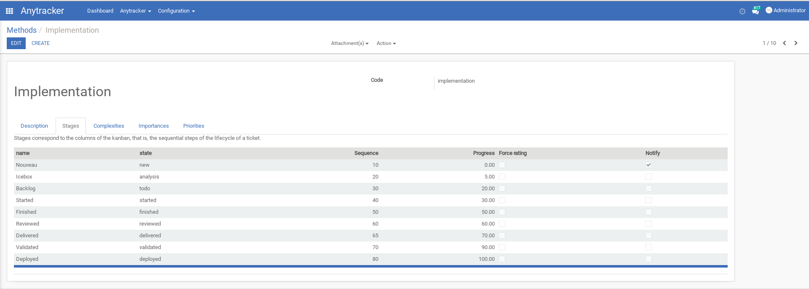
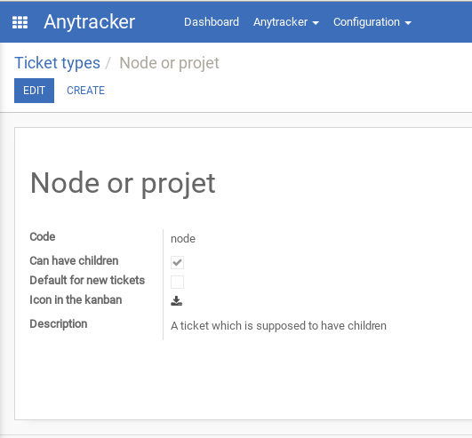
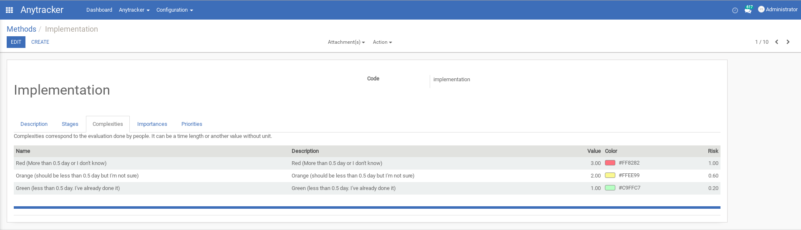
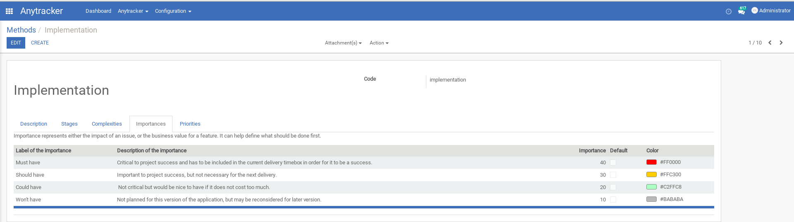
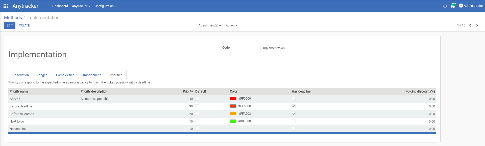
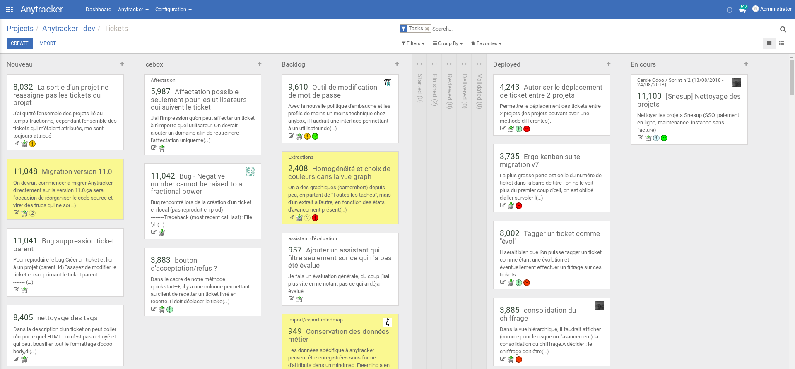

Anytracker is an open-source agile/lean project management tool available as an Odoo module, developped and used by Anybox.
The project is hosted on Bitbucket as a Mercurial repository: https://bitbucket.org/anybox/anytracker/
It provides:






The initial design decision of Anytracker was to use a hierarchical representation of tickets, with a uniform model: a project is a ticket and each ticket can have subtickets. It allows to split a big project into subprojects, features, subfeatures, tickets, and split again a ticket when it is considered too big.
The kanban view can display only tickets at a specific level in the hierarchy, to focus on a specific sub-node of the project.
Different features are split into submodules, using inheritance as if they were real separate modules. It allows to more easily test and modify the different features independently.
This tools has been kept separate and independant as most as possible from standard Odoo modules. It allowed us to evolve from OpenERP 6.0 to latest versions without too much work and easy migration path. Dependency on a few standard Odoo modules has only been introduced recently for invoicing features, and might be removed again in the future.
You can run the tests from a buildout with:
$ ./bin/openerp_command run-tests -d dbname -m anytracker
Or better, if you installed nose in your buildout. Add nose-exclude egg in your buildout. (exclude plugin for nose --exclude-dir)
./bin/nosetests -d anytracker_test -- anytracker/anytracker/ \
--exclude-dir=anytracker/anytracker/history --exclude-dir=anytracker/anytracker/invoicing --exclude-dir=anytracker/anytracker/mindmap
Other contributions (with tests) are welcome from anyone through Bitbucket pull requests.
Anytracker includes some icons from the "fam fam fam silk" set, provided under the terms of the Creative Commons Attribution 2.5 license at http://www.famfamfam.com/lab/icons/silk/